Köpeklerle İlgili Diğer Siteye Git
Kedilerle İlgili Diğer Siteye Git
Muhabbet kuşları, aslen Avustralya’nın kurak ve yarı kurak iç kesimlerinden gelen, Papağanlar (Psittacidae) ailesine ait küçük ama son derece zeki evcil dostlarımızdır. Vahşi doğada sürüler halinde yaşarlar; bu yüzden evde beslendiklerinde de sahibine ve bulunduğu ortama çok çabuk adapte olurlar. Ortalama ömürleri iyi bir bakımla 5 ila 10 yıl (bazen 15 yıla kadar) arasındadır. Neşeli cıvıltıları, rengarenk tüyleri ve oyuncu karakterleriyle ev ortamına büyük bir canlılık katar. Doğru bir sevgi ve sabırla yaklaşıldığında kısa sürede ele alışır, omzunuzda gezmeyi ve sizinle vakit geçirmeyi çok severler.
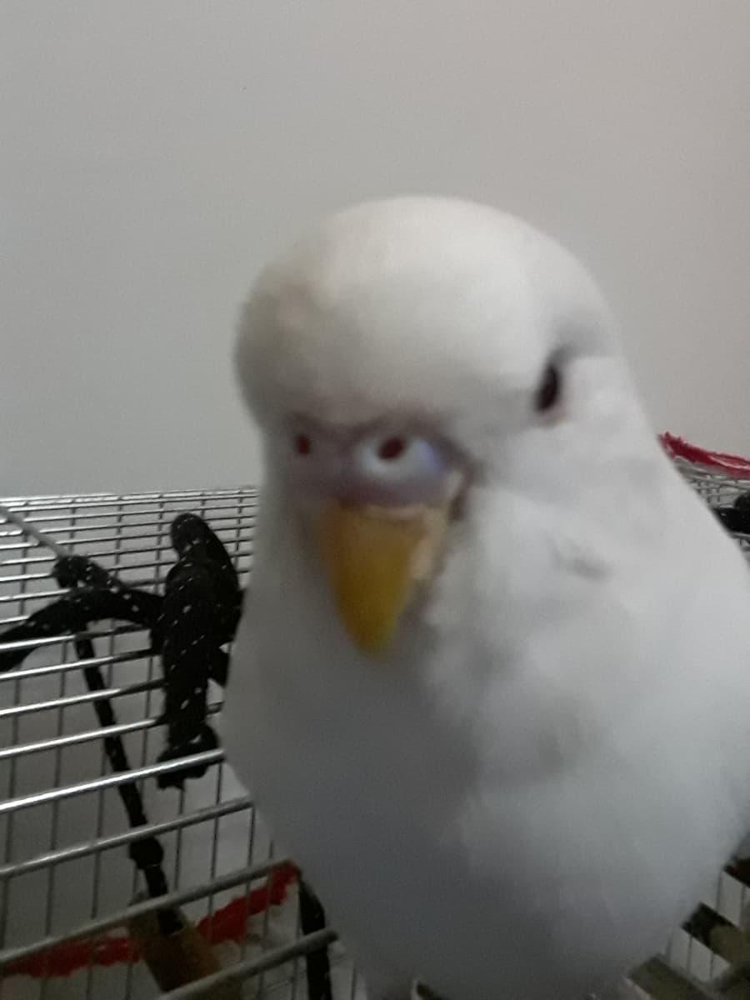
Sağlıklı ve kolay evcilleştirilebilir bir muhabbet kuşu seçmek için dikkat edilmesi gereken en önemli kriter yaştır. Yavru kuşlar (yaklaşık 2-3 aylık olanlar) insanlara çok daha hızlı alışır.
Yaş Tespiti: Yavru muhabbet kuşlarının kafasındaki çizgiler gagasına kadar uzanır ve gözleri tamamen siyahtır. Yetişkinleştikçe kafasındaki çizgiler silinir ve göz çevresinde beyaz bir halka belirdiğinde göz bebekleri grileşir.
Sağlık Kontrolü: Sağlıklı bir kuş tünekte dik durur, tüyleri pürüzsüz ve vücuduna yapışıktır. Kenarda kabarık şekilde oturan, sürekli uyuklayan, gözlerinde akıntı olan veya kuyruğu nefes alıp verirken aşırı sallanan kuşlar hasta olabilir. Dışkısının yapışkan ve sulu olmaması, anket bölgesinin temiz olması gerekir.
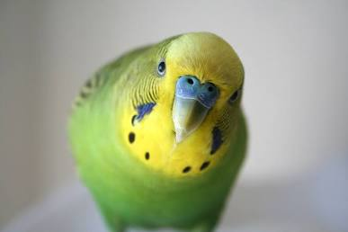
Muhabbet kuşları için kafes seçimi onların konforu açısından hayati önem taşır. Kuşun kanatlarını rahatça açabileceği, yatay telleri olan (tırmanmayı sevdikleri için yatay teller şarttır) geniş kafesler tercih edilmelidir.
İç Donanım: Plastik tünekler ayak sağlığına zarar vereceği ve mantara yol açabileceği için kesinlikle doğal ahşap tünekler kullanılmalıdır. Kafeste taze içme suyu için suluk, kaliteli yem için yemlik, banyo yapmaları için banyoluk ve zihinsel gelişimleri için ahşap merdivenler/salıncaklar bulunmalıdır.
Temizlik: Kafes tabanı haftada en az 1-2 kez temizlenmeli, altındaki ızgara veya kağıt değiştirilmelidir. Plastik oyuncaklardan kaçınılmalı, kemirmeyi sevdikleri için zararsız ahşap oyuncaklar seçilmelidir.
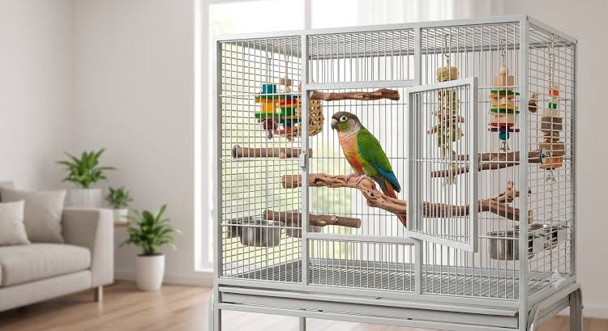
Muhabbet kuşlarının ana besin kaynağı kabuklu tohumlar ve darılardır. Ancak sadece tohumla beslenmek ömürlerini kısaltır; bu yüzden beslenmeleri çeşitlendirilmelidir.
Yiyebilecekleri (Faydalı Besinler): Taze marul, roka, havuç rende, brokoli, elma dilimleri, haşlanmış yumurta sarısı (özellikle tüy dökümü ve üreme döneminde protein için çok önemlidir) ve haftada bir kez kuş kumu (sindirim için).
Kesinlikle Yasaklı / Zehirli Besinler: Avokado (kuşlar için son derece zehirlidir, ölümcüldür), çikolata, kafeinli içecekler, soğan, sarımsak, maydanoz sapı (böbreklerini yorar), tuzlu krakerler ve şekerli gıdalar asla verilmemelidir. Taze su her gün mutlaka değiştirilmelidir.
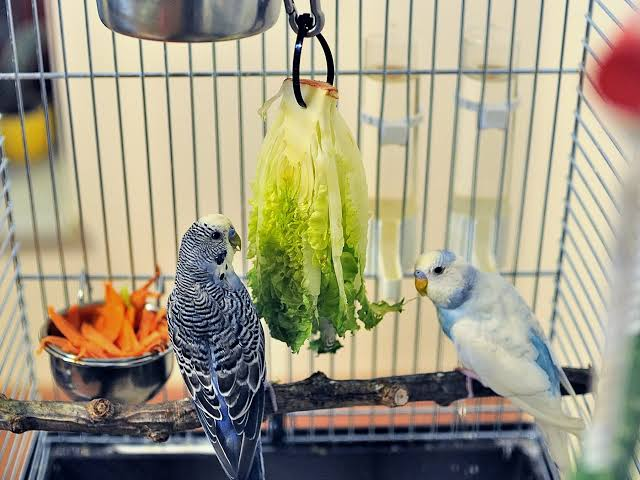
Konuşma Eğitimi: Genellikle erkek muhabbet kuşları ses taklidinde ve kelime öğrenmede dişilerden çok daha başarılıdır. Eğitim için odada başka dikkat dağıtıcı ses (televizyon vb.) olmamalıdır. Kuşunla birebir ilgilenerek aynı kelimeyi (örneğin adını veya "Cici kuş") net ve sakin bir tonla sürekli tekrarlamalısınız. Sabırlı olursanız birkaç hafta içinde ilk kelimelerini mırıldanmaya başlarlar.
Başlıca Türleri: Standart evcil muhabbet kuşlarının yanı sıra; normalden çok daha iri ve gösterişli olan Jumbo, daha uzun boylu ve güçlü yapılı Çekoslavak, tüm vücudu saf beyaz olan Albino ve tamamen sarı tüylü kırmızı gözlü Lutino en popüler türleridir.
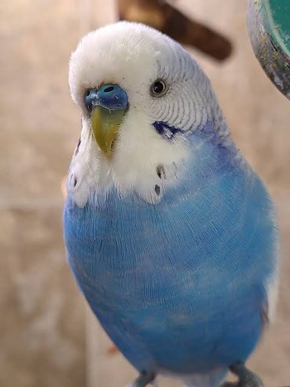
Avustralya'nın açık ormanlık ve kurak bölgelerine özgü olan Sultan papağanları, kakadu ailesinin en küçük üyesidir. Başlarındaki karakteristik sarı/dik tepe tüyleri ve yanaklarındaki belirgin turuncu "allık" benekleriyle hemen ayırt edilirler. Ortalama 15-20 yıl yaşayabilen uzun ömürlü dostlardır. Son derece barışçıl, sevecen ve hassas bir yapıya sahiptirler. Sahibinin omuzunda saatlerce oturmayı, ilgi görmeyi ve özellikle ıslık çalınmasını çok severler. Agresiflikleri çok düşktür, bu nedenle evde beslemek için en uyumlu papağan türlerinden biridir.
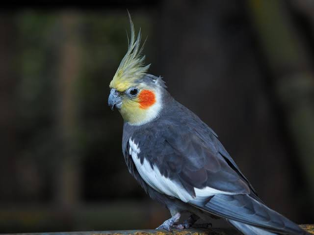
Sultan papağanı alırken kuşun genel duruşuna ve davranışlarına dikkat edilmelidir.
Fiziksel Kriterler: Sağlıklı bir yavru sultan papağanı ele alındığında ürkek ama dik ve güçlü bir duruş sergiler. Tüyleri pürüzsüz olmalı, özellikle kanat uçlarında veya kuyruğunda sarkma, kırılma olmamalıdır. Başındaki tepe tüyleri dik ve düzgün durmalıdır.
Sağlık Kontrolü: Burun deliklerinde akıntı veya tıkanıklık (hırıltılı solunum işareti) olmamalıdır. Gözleri canlı ve parlak bakmalıdır. Çok tüy dökmüş veya zayıf düşmüş kuşlar strese veya hastalığa açık olabilir.
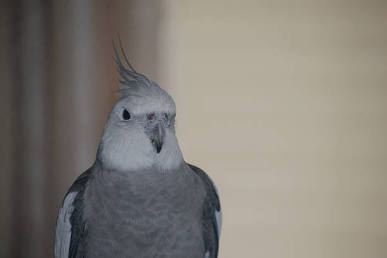
Sultan papağanları uzun kuyruklara sahip oldukları için dar kafeslerde kuyruk tüylerini kırabilirler. Bu yüzden geniş, yatay ve uzun kafesler tercih edilmelidir..
Güvenlik ve Konfor: Başlarındaki tepe tüylerinin kafes kapısından girip çıkarken sıkışmaması veya zarar görmemesi için kapı genişliği önemlidir. Kafes içinde tünekler kaliteli ahşaptan olmalı ve kuşun kuyruğunun kafesin tabanına değmeyeceği yükseklikte konumlandırılmalıdır.
İlgi ve Özgürlük: Sultan papağanları sosyal canlılardır; gün içinde kafes dışında güvenli bir odada gözetim altında serbest uçuş yapmaya ve kanat açmaya büyük ihtiyaç duyarlar.
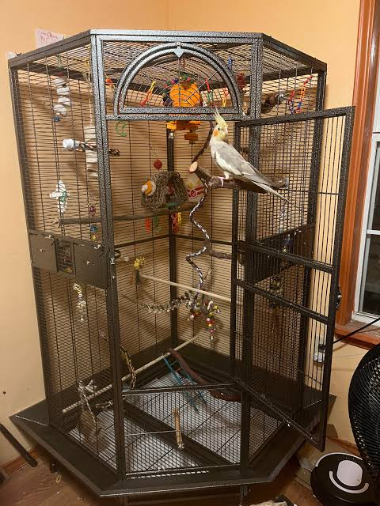
Sultan papağanlarının güçlü gagaları sert tohumları kolayca kırabilir.
Faydalı Besinler: Kaliteli büyük papağan yemleri, aspür, kenevir tohumu, dal darı ve çim tohumları temelini oluşturur. Bunun yan sıra haşlanmış yumurta (özellikle yumurta maması), brokoli, mısır taneleri, rendelenmiş havuç ve elma/armut gibi meyveler bayılarak tükettikleri besinlerdir.
Zararlı Besinler: Muhabbet kuşlarında olduğu gibi avokado, çikolata, tuzlu ve baharatlı yiyecekler, kafein, soğan, sarımsak ve çekirdekli meyvelerin çekirdekleri (elma çekirdeği vb. siyanür barındırır) kesinlikle verilmemelidir.
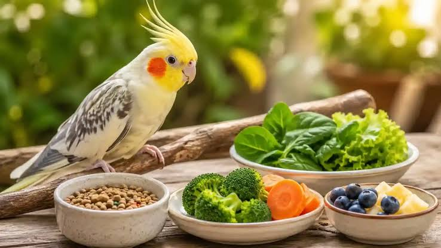
Eğitim: Sultan papağanlarının kelime dağarcığı muhabbet kuşlarına göre daha sınırlıdır (birkaç kelime öğrenebilirler); ancak muazzam bir melodi ve ıslık taklit yetenekleri vardır. Duydukları kapı zilini, telefon sesini ya da sevilen bir şarkı melodisini çok kısa sürede kusursuz bir şekilde ıslıkla çalabilirler. Erkek sultan papağanları ses taklidinde dişilerden çok daha yeteneklidir.
Popüler Türleri: Gri gövdeli ve sarı kafalı Normal Gri, vücudu tamamen sarı/beyaz olan Lutino, kanatlarında ve sırtında inci gibi benekler bulunan Pearl (İnci) ve vücudunda büyük beyaz/sarı lekeler taşıyan Pied en yaygın mutasyonlarındadır.
Aslen Kanarya Adaları, Azorlar ve Madeira kökenli olan kanaryalar, yüzyıllardır kusursuz ötüşleri için evcilleştirilmiş narin ötücü kuşlardır. Papağanlar gibi gagalarıyla nesneleri kemirmezler veya ele alınmaktan hoşlanmazlar; daha çok göz zevki ve eşsiz sesleri için beslenen aristokrat kuşlardır. Ortalama ömürleri 8-10 yıl civarındadır. Oldukça ürkek ve hassas canlılardır; ani hareketlerden ve yüksek seslerden ürkebilirler. Onları kafeste izlemek ve özellikle erkeklerin çıkardığı kusursuz serenatları dinlemek insanı inanılmaz derecede dinlendirir ve huzur verir.
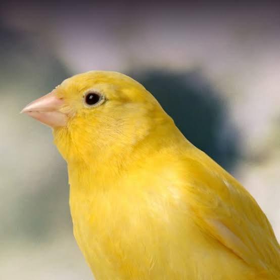
Kanarya alırken en kritik ayrım cinsiyet ve amaç seçimidir.
Ötüş Beklentisi: Eğer amacınız evde güzel sesler dinlemekse mutlaka erkek kanarya seçmelisiniz. Dişi kanaryalar ötmez, sadece kısa çağrı sesleri çıkarır. Erkek kanaryalar ise özellikle bahar dönemlerinde ve günün belirli saatlerinde nefis melodilerle öteler.
Sağlık Kriterleri: Sağlıklı bir kanarya tünekte son derece dik, mağrur ve canlı durur. Gözleri parlak boncuk gibidir. Tüyleri pürüzsüz ve sıkı olmalıdır. Kafesin köşesinde kabarmış, solunum yaparken kuyruğu aşağı yukarı hızlıca sarsılan kuşlar solunum yolu hastalıklarına (örneğin akar/asma) sahip olabilir.
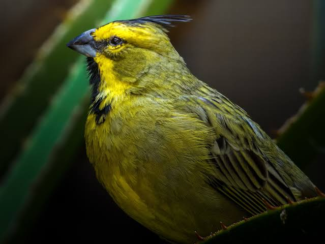
Kanaryalar dikey uçuşlardan ziyade yatay uçuş yapmayı severler. Bu yüzden uzunlamasına geniş kafesler onlar için en idealidir.
İç Donanım: Aynalara veya çok fazla karmaşık oyuncağa ihtiyaç duymazlar. Ahşap tünekler ayak sağlığı için kafese yerleştirilmelidir.
Tüy Dökümü (Tüy Zamanı): Kanaryalar her yıl yaz sonuna doğru "tüy dökümü" dönemine girerler. Bu dönemde eski tüylerini atıp yenilerini çıkarırlar. Çok hassas ve yorgun olurlar. Bu süreçte kafesin yeri asla değiştirilmemeli, akım (rahtsız edici rüzgar) almayan ılık bir yerde tutulmalı ve suya eklenen özel tüy dönemi vitaminleri/mineralleri ile desteklenmelidir.
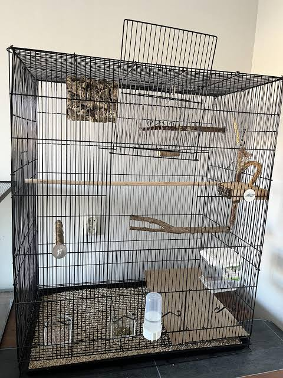
Beslenme Rehberi (Tohumlar, Mama ve Zararlı Besinler).
Temel Besinler: Kolza tohumu (kanola), nijer tohumu (enerji verir, az verilmelidir), keten tohumu ve şalgam tohumu içeren özel kanarya yemleri temelidir.
Ek Gıdalar: Marul yaprağı, kıvırcık, rende havuç, elma dilimi ve haftada bir kez kanaryalar için üretilmiş yumurtalı bisküvi/mama karışımları çok severler. Kesinlikle ağır, yağlı, tuzlu insan yemekleri verilmemelidir; sindirim sistemlerini anında bozar. Taze ve klorsuz içme suyu günlük olarak yenilenmelidir.
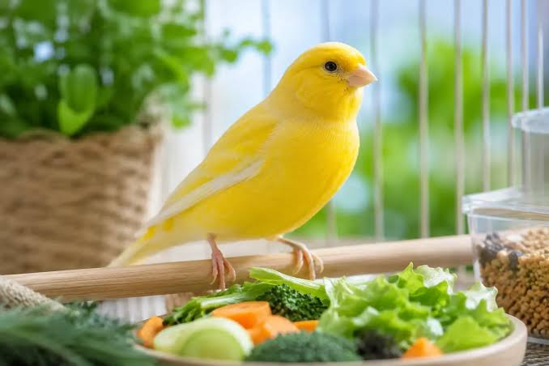
Ötüş Özelliği: Kanaryalar insan sesini veya çevredeki sesleri taklit etmezler. Ötüş yetenekleri genetik olarak gelir. Ancak yavru erkek kanaryalar, usta ve güzel öten yaşlı kanaryaların seslerini (veya eğitici ses kayıtlarını) dinleyerek kendi ötüş tekniklerini geliştirirler ve ustalaşırlar.
Popüler Türleri: Başının üzerindeki şapka benzeri kabarık tüyleriyle ünlü Gloster, gagası kapalı şekilde fısıltıyla ve çok uzun süre melodi çalan Harz Roller, oldukça iri gövdeli Yorkshire ve İspanya kökenli ritmik ötüşüyle bilinen İspanyol Timbrado dünyadaki en ünlü kanarya ırklarıdır.
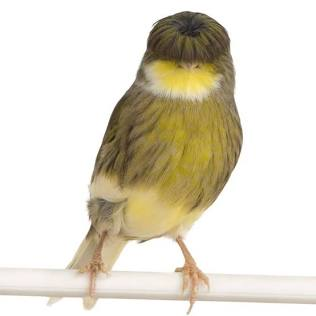